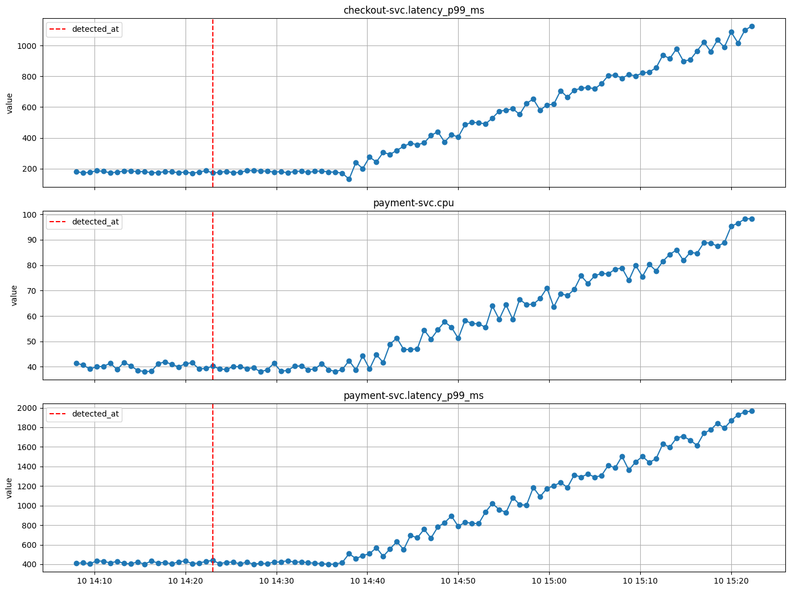
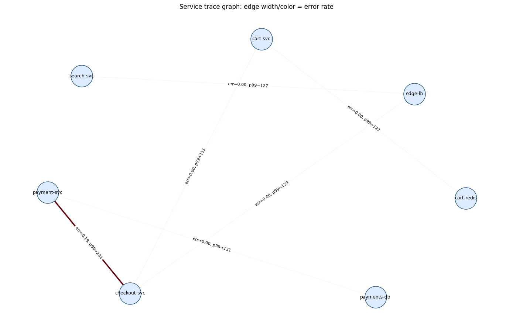

Contract ổn định
incident_id, evidence_id, source_ref giữ traceability qua toàn pipeline.
AIOps Lab Deck
Giải thích 4 feature chính của engine: input/output, field quan trọng, logic xử lý và lý do thiết kế để đi từ raw incident evidence tới remediation decision có audit.
System Pipeline
Engine không đoán action trực tiếp. Mỗi stage tạo thêm cấu trúc: evidence, cluster, culprit candidate, rồi mới ra decision.
incident_id, evidence_id, source_ref giữ traceability qua toàn pipeline.
Không map trực tiếp root_cause_class sang action và không tin tuyệt đối trigger_alert.service.
Evidence yếu, mới hoặc conflict thì chọn page_oncall thay vì auto-remediate mù.
Mental Model
Alert service chưa chắc là service gây lỗi. Slide nên dùng cặp khái niệm này để người nghe không nhầm signal với nguyên nhân.
Là target chính của RCA/remediation. Trong schema, culprit thường xuất hiện ở root_cause_service hoặc candidate rank #1.
Có thể phát alert, log lỗi hoặc latency tăng, nhưng chỉ là nơi symptom lộ ra. Không nên auto-remediate theo victim.
Detection & Triage
Metrics và logs được chuyển thành cùng một envelope để stage sau không phải đọc lại raw data.
Feature 001 / I-O Contract
evidence_candidates[]| Input field | Cách dùng hiện tại | Giá trị về sau |
|---|---|---|
incident_id | Join artifacts theo incident | Replay/debug toàn evidence chain |
detected_at | Tách baseline và post-alert | Xây timeline culprit/victim |
trigger_alert.service | Điểm bắt đầu điều tra | So với RCA top service để phát hiện victim |
metrics_window.samples | Tính anomaly score | Reuse cho timestamp và causal-lag ranker |
logs | Mine log template | Historical retrieval và LLM evidence |
Mỗi evidence có evidence_id, service, score, signals, source_ref, details.
Feature 001 / Processing Logic
Metric anomaly và log template anomaly khác cách tính, nhưng đều emit EvidenceCandidate để stage sau xử lý thống nhất.
Tách service.metric, chia baseline/post-alert, tính delta, ratio, slope, z-score rồi emit metric evidence.
Normalize raw message thành template, group theo svc + level + template, tính severity, burst, keyword và metric-link score.

Correlation/RCA không cần đọc raw data. Chúng dùng chung service, timestamp, score, signals, evidence_id.
Feature 001 / Variables For Score
Slide này là phần “nguyên liệu”: metric branch tạo anomaly signals, log branch tạo các score thành phần. Slide sau mới biến chúng thành score.
(end - median) / (1.4826 * MAD), ít nhạy với outlier baseline.abs(post_mean - baseline_mean) / baseline_std, bắt dịch chuyển sau alert.end_value / baseline_mean, bắt mức tăng/giảm tương đối.abs(slope) / abs(baseline_mean), bắt tốc độ degrade kéo dài.ERROR = 1.0, WARN = 0.6, INFO = 0.2.1.0 nếu service có log anomaly đồng thời có metric anomaly.template = "ConnectionPool timeout ..." level = ERROR count = 84 keyword = timeout + pool metric_link_score = 1.0
Feature 001 / Score Computation
score là suspiciousness của evidenceFeature 002 filter bằng min_score, nên Feature 001 phải biến metric/log bất thường thành score chuẩn hóa trong [0, 1].
raw_score = max( abs(directional_z) / 8, abs(robust_z) / 10, drift / 6, abs(ratio - 1) / 2.5, slope_signal * 20 ) score = clamp01(raw_score + bonus)
Dùng max(...) vì metric có thể bất thường theo spike, drift, ratio hoặc robust z-score. Operational metrics như latency, error rate, memory, pool được bonus nhỏ.
log_score = 0.25 * severity_score + 0.20 * frequency_score + 0.20 * burst_score + 0.25 * keyword_score + 0.10 * metric_link_score
Dùng weighted sum vì log đáng nghi khi vừa nghiêm trọng, vừa lặp nhiều, vừa burst, có keyword vận hành và trùng service có metric anomaly.
metric_increase/decrease từ hướng delta; anomaly type từ tên metric như latency, error, memory, pool, dns; sau đó thêm metric_spike và post_alert.
Luôn có log_template và log_level_*; keyword trong template sinh pool_anomaly, timeout_anomaly, dns_anomaly, tls_anomaly; metric match thêm metric_linked.
Feature 001 / Output Contract
evidence_candidates[] là output chuẩn hóa của DetectionMỗi candidate là một signal đáng nghi đã có score, service, time range và đường truy vết về incident JSON.
{
"schema_version": "1.0",
"incident_id": "E01",
"evidence_candidates": [...]
}
Đây là contract mà Correlation nhận vào. Feature 002 không đọc lại raw metrics/logs.
{
"evidence_id": "log:E01:payment-svc:0b879767bd",
"evidence_type": "log",
"service": "payment-svc",
"detected_at": "2026-06-10T14:23:00Z",
"timestamp_start": "2026-06-10T14:08:27Z",
"timestamp_end": "2026-06-10T14:42:30Z",
"score": 0.8242,
"signals": ["log_template", "log_level_error", "pool_anomaly", "timeout_anomaly", "metric_linked"],
"summary": "84 ERROR logs matching connection pool timeout",
"source_ref": {"path": "logs"},
"details": {
"template_id": "b0454ec747",
"count": 84
}
}
service + time rangeservice là join key cho topology/RCA/action. timestamp_start/end giúp correlation group theo time session.
score + signalsscore dùng để filter/rank evidence. signals là nhãn rule-based: log_template do log đã normalize, log_level_error từ level ERROR, pool_anomaly/timeout_anomaly từ keyword, metric_linked khi cùng service có metric anomaly.
source_ref + evidence_idGiữ trace từ final decision về raw incident path. Một evidence được assign vào đúng một cluster.
detailsMetric details chứa baseline/delta/z-score; log details chứa template_id, count, raw examples. Đây là phần debug và retrieval fingerprint.
Alert Correlation
Correlation giảm noise bằng hai điều kiện: gần nhau theo thời gian và gần nhau trong topology/trace.
Feature 002 / Logic
Giữ evidence có score >= min_score. Default 0.28 để không drop evidence detection đã coi là hữu ích.
Group theo detected_at. Alert liên tiếp cách nhau không quá gap_sec = 300 thì cùng burst.
Merge service nếu shortest path <= max_hop = 2, có augment bằng live traces.

Feature 002 / Cluster Output
{
"cluster_id": "corr:E01:s001:g001",
"alert_count": 9,
"services": ["checkout-svc", "edge-lb", "payment-svc"],
"time_range": ["2026-06-10T14:08:00Z", "2026-06-10T15:22:15Z"],
"dominant_signals": ["metric_spike", "pool_anomaly", "timeout_anomaly"],
"fingerprints": [
"metric:payment-svc:latency_p99_ms",
"log:payment-svc:b0454ec747"
],
"evidence_ids": [
"metric:E01:payment-svc.latency_p99_ms",
"log:E01:payment-svc:0b879767bd"
]
}
servicesTrở thành candidate pool cho RCA. Đây là nơi scope RCA được giới hạn.
fingerprintsDùng cho retrieval/dedup vì ổn định hơn raw timestamp và raw value.
topology_detailsGiải thích vì sao hai service được gom chung, giúp audit correlation.
Feature 002 / Cluster Fields
Cluster không chỉ gom alert. Nó tạo summary đủ dùng cho RCA, retrieval, LLM prompt và audit.
| Field | Cách tạo ra | Ý nghĩa cho stage sau |
|---|---|---|
cluster_id | Deterministic: corr:{incident}:s{session}:g{group} | RCA và audit tham chiếu đúng cluster, không lệch khi chạy lại. |
alert_count | Đếm số evidence được assign vào cluster | Cho biết mức độ gom nhiễu; dùng để đọc nhanh cluster lớn/nhỏ. |
services | Unique service từ evidence sau topology grouping | Candidate pool trực tiếp cho RCA, giới hạn scope culprit. |
time_range | Min timestamp_start, max timestamp_end | Tạo timeline incident và giải thích burst kéo dài bao lâu. |
dominant_signals | Đếm tần suất signals trong cluster, lấy signals nổi bật | LLM/decision biết pattern chính: pool, timeout, DNS, TLS... |
fingerprints | metric:{service}:{metric} hoặc log:{service}:{template_id} | Ổn định cho retrieval/dedup, không phụ thuộc timestamp/raw value. |
evidence_ids | Danh sách ID evidence trong cluster | Bridge từ cluster/RCA/final decision về raw evidence. |
topology_details | Ghi service distances và trace edges dùng để merge | Audit vì sao các service được gom chung. |
RCA RRF Ranking
RCA không chọn action. Nó chỉ trả culprit candidates, score, ranker evidence và confidence gap.
Feature 003 / Rankers
Chạy trên graph caller -> callee. Downstream dependency thường là nơi lỗi gốc lan ngược lên caller.
Tìm service degrade sớm nhất bằng metric z-score; fallback về earliest evidence timestamp.
Dùng cross-correlation giữa anomaly series để xem service nào lead service khác.
warnings để decision layer xử lý bảo thủ hơn.Feature 003 / Fusion
rrf_score(service) = sum(weight_m * 1 / (rrf_k + rank_m))
rrf_k = 60 làm mượt để ranking ổn định khi ranker có scale khác nhau.
(score_top1 - score_top2) / score_top1. Gap thấp nghĩa là culprit candidates quá sát nhau, decision nên giảm confidence hoặc escalate.
{
"rank": 1,
"service": "payment-svc",
"rrf_score": 0.016235,
"normalized_score": 1.0,
"ranker_ranks": {
"pagerank": 1,
"timestamp": 2,
"causal_lag": 2
},
"evidence_ids": [
"metric:E01:payment-svc.latency_p99_ms",
"log:E01:payment-svc:0b879767bd"
]
}
LLM Remediation Decision
LLM là helper có kiểm soát, không thay thế RCA và không được vượt action catalog.
Feature 004 / RAG-style Retrieval
incidents_history.jsonĐây là hybrid retrieval trên structured history, chưa phải vector DB đầy đủ. Top neighbors được đưa vào action voting và LLM prompt.
affected_services, log_signatures, trace_signatures, metric_signatures.
vote = similarity * outcome_weight. Success mạnh hơn partial, failed gần như không được ưu tiên.
actions.yaml giới hạn action hợp lệ, required params, cost, downtime và blast radius.
| File | Vai trò | Output sau cùng |
|---|---|---|
incidents_history.json | Historical neighbors, precedents, outcomes | top_3_neighbors, action_votes |
actions.yaml | Action schema và risk metadata | selected_action_meta, validation |
artifacts/rca/*.json | Culprit candidates | Action target service |
Feature 004 / Decision Output
{
"selected_action": "rollback_service",
"params": {
"service": "payment-svc",
"target_version": "previous"
},
"confidence": 0.8316,
"evidence": {
"method": "llm-guarded-fallback",
"root_cause_service": "payment-svc",
"top_3_neighbors": ["INC-2026-03-20", "INC-2025-08-17", "INC-2025-11-08"],
"dominant_signals": ["pool_anomaly", "timeout_anomaly"],
"blast_radius_check": {"blast_radius_services": 1, "allowed": true}
}
}
confidenceCó thể dùng làm threshold auto-run trong tương lai, ví dụ chỉ auto nếu confidence đủ cao.
evidence.methodCho biết decision đến từ LLM, guarded fallback, error fallback hay deterministic mode.
blast_radius_checkHook cho approval policy: action ảnh hưởng rộng thì cần human approval.
Safety Guardrails
LLM giúp summarize/classify, nhưng decision phải pass validation và safety checks.
root_cause_service phải nằm trong RCA candidates.
selected_action phải tồn tại trong actions.yaml và đủ params.
LLM off, missing key, invalid JSON hoặc conflict thì dùng deterministic fallback.
Evidence mới/yếu/conflict thì chọn page_oncall thay vì đoán.
End-to-End Traceability
artifacts/detection/E01_evidence_candidates.json
Raw metrics/logs đã thành evidence có score và source_ref.
artifacts/rca/E01_root_causes.json
Culprit candidates, ranker ranks, warnings và confidence gap.
artifacts/remediation/E01_decision.json
Final action, params, confidence, neighbors, votes và audit line.
Recap
Mỗi feature có schema riêng, nhưng nối với nhau bằng incident_id, service, evidence_id, cluster_id.
Score dùng cho ranking, fingerprints dùng cho retrieval, warnings/confidence dùng cho guardrails, source_ref dùng cho audit.
Alert service là điểm bắt đầu điều tra, không phải action target mặc định.
LLM chỉ hỗ trợ reasoning; final decision vẫn qua RCA, history, action catalog và safety checks.